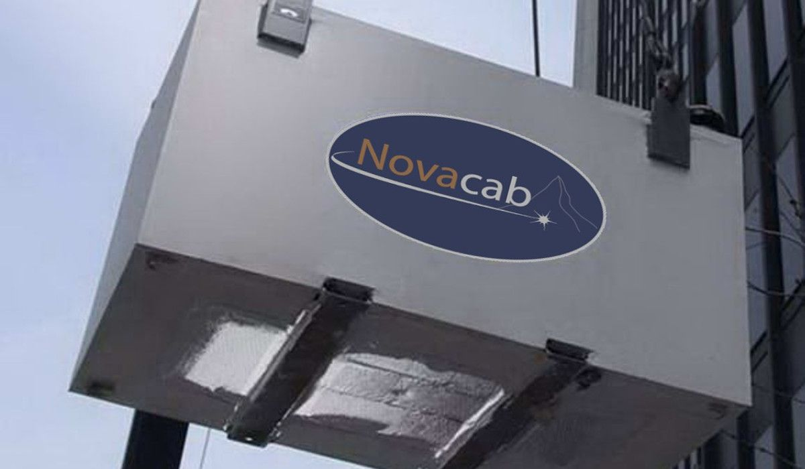
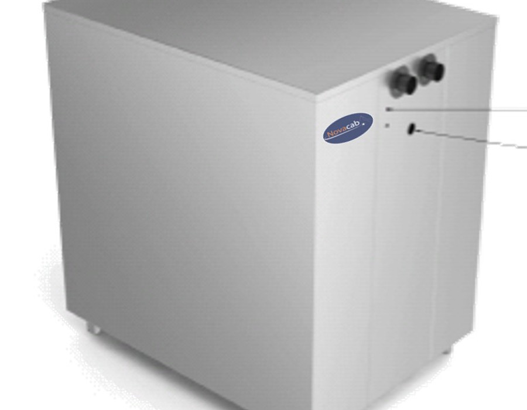

After the RPC removes the particulates, the SRU squeezes the remaining energy out of the exhaust — recovering low-grade heat and clean, condensed water from gas that used to vanish into the sky.
The SRU retrofits directly onto existing boilers and furnaces — or integrates into new installations. As hot flue gas passes through, its heat transfers into your water or process loop, and the water vapor in the exhaust condenses into clean, usable water. Fuel bills drop, CO₂ drops, and the water meter slows down.
Captures rejected heat from exhaust and returns it to your process — cutting fuel input 8–10% at power plants.
Condenses clean water out of the flue gas — a resource, straight from your stack.
At coal plants, targets NOx, SOx, condensables and acid gases as the gas is cooled.

E&J Gallo Winery, Darigold, Georgia Gulf, Mission Linen Supply, Harris Ranch Meats, Growers Transplanting — Sidel's condensing technology has been paying for itself in American industry since 1978.
"You will be 100% satisfied with the money saved, CO₂ emissions reduced, water conserved, and exceptional service — or we'll buy your unit back from you. Period."